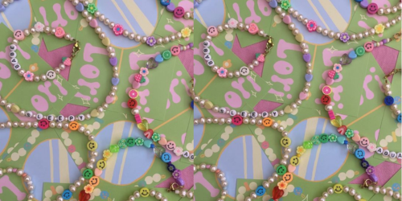

About Us


¡Bienvenidos a JujuMel, donde la pasión por las joyas artesanales cobra vida!
¡Bienvenidos a JujuMel, donde la pasión por las joyas artesanales cobra vida!
Nuestra historia comenzó hace años, cuando a la edad de 14 años, descubrí
mi interés por la creación de joyas. Con el deseo de plasmar mi creatividad,
decidí adentrarme en el fascinante mundo de la joyería. Lo que comenzó como
una fascinación juvenil se convirtió en una travesía de autodescubrimiento y
crecimiento, perfeccionando técnicas y afinando mi visión artística.
Cosas que debes saber al navegar en JujuMel...
Tallas en Brazaletes
XS = 16.5 cm
S = 18 cm
M = 20.5 cm
L = 22 cm
XL = 24.5 cm
Tallas en Collares
XS = 38 cm
S = 40 cm
M = 42 cm
L = 44 cm
XL = 46 cm